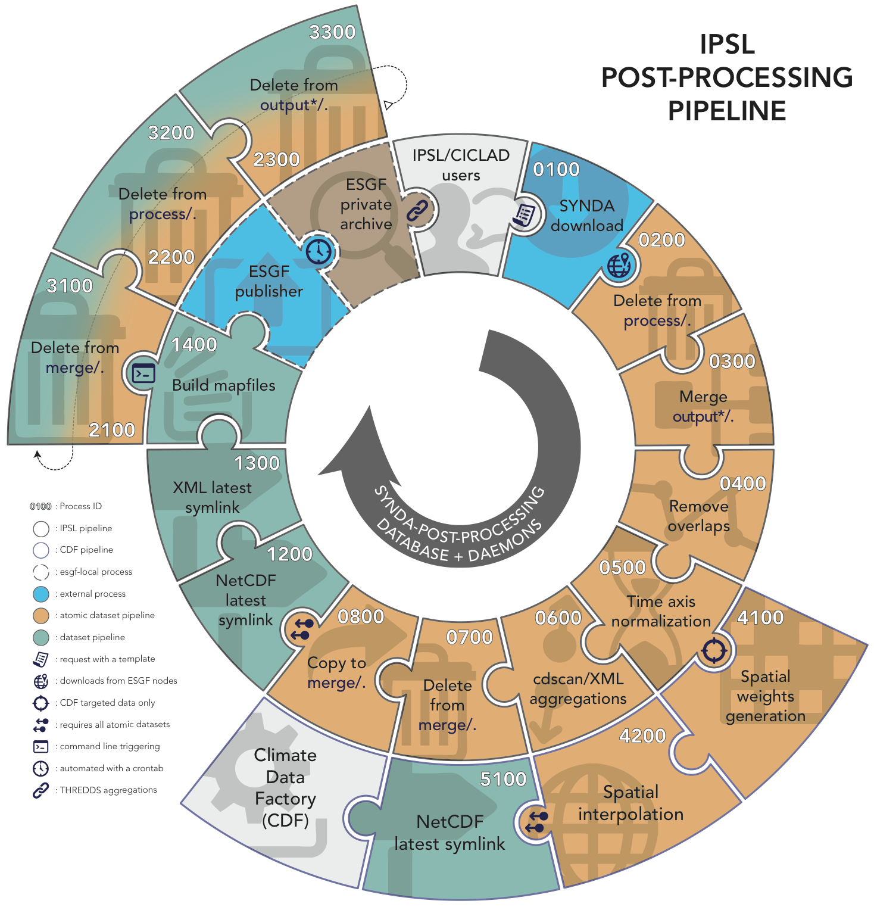

The PRODIGUER working team provides a set of specialized tools design to streamline and to ease analysis of data coming from the ESG-F distributed digital repositories. These tools are available as stand-alone command-line. They are also part of a post-processing pipeline deployed on CICLAD cluster as follows.
Large size : [http://dods.ipsl.jussieu.fr/glipsl/SDPPP-schema.png](http://dods.ipsl.jussieu.fr/glipsl/SDPPP-schema.png)
The post-postprocessing pipeline is part of SYNDA tool and is based on a SQLite database that allows a parallel, orderly and asynchronous post-processing on files. It only supports NetCDF files.
To provider smaller files and increase downloading rates, big files from ESG-F are splitted over a time period. The scheme of chunked files depends on the project, the institute, the model and the output frequency. An ESG-F atomic dataset gathers one or several NetCDF splitted files. An ESGF-F dataset gathers one or several atmoic dataset.
A Python daemon (whom we call a “worker”) deals with the database using a Remote Procedure Call (RPC) client skeleton. For any waiting job the worker inputs the corresponding (atomic) dataset to each process. Any transition with waiting status is handle by the worker that forks a Shell chlid-process or loads a Python script as module, accordingly to the job. Finally the worker returns the job status and updates the corresponding database entry to reach the next transition. No more jobs appears when all atomic datasets and datasets reach the done status.
SYNDA is a python program managing discovery, authentication, certificate and download processes from the ESG-F archives in an easy way. The download of files is achieved through the exploration of the ESG-F data repositories governed by a configuration files in which user defines its search criteria. These criteria pertains to metadata attributes used for discovery of climate data. These attributes are defined by Data Reference Syntax (DRS). Thus, a user can enter lists of values for variables, frequencies, experiments and ensemble numbers into a configuration as directed by already provided templates. Using these templates, SYNDA explores the ESG-F nodes and downloads all the corresponding available files. The program may be run regularly to download the possible new files.
In this context, SYNDA downloads available files from ESG-F onto local filesystem. SYNDA ensures that an atomic dataset is completely donwloaded before hands over to post-processing pipeline. synda rebuild the dataset tree on local filesystem according to the DRS between the project and version facets. synda is compatible whatever the DRS of the project. A dataset should just be defined by a project ID and a version number with a DRS-free between both facets (i.e., /prodigfs/esgf/mirror/$PROJECT/[...]/$VERSION). Each downloaded atomic dataset leads to a new event committed in the pipeline database. This event initializes the atomic dataset processes chain. If a dataset is discovered by synda as a latest version, a dataset entry is created into the database and will be initiated when all atomic dataset will be done. Consequently, only the latest datasets are post-processed.
More about how submit a SYNDA template here.
| Input directory | |
| Output directory | /prodigfs/esgf/mirror/$PROJECT/. |
Some of ESG-F projects partitiones their datasets in different “products” dividing the DRS. A product facet is often use to store the least used datasets separately depending on the version, the time period, the variable and the frequency. For clear experience and facilitate archive management, we decided to merge the different products of the DRS if exist.
This first post-process starts by cleaning the output directory on local filesystem. This allows to re-process the corresponding atomic dataset if necessary without any conflicts. Then, we build hard links from to merge atomic datasets with only different products in the DRS.
| Input directory | /prodigfs/esgf/mirror/$PROJECT/output*/. |
| Output directory | /prodigfs/esgf/process/$PROJECT/merge/. |
Note
Warning
Because of a significant number of exceptions, we decided to take output1 as reference in the case of products with same filenames. Moreover, this step leads to a deprecated product
Because the scheme of ESG-F chunked files is not fixed, the time period covered by an atomic dataset sometimes includes unecessary overlaps. Sometimes, an overlap occurs leading to deprecated file(s).
overlap is a command-line tool allowing you to easily check and delete all chunked overlapping files in your atmoic dataset in order to save disk space. Through a network overlap builds a directed graph, that is, graphs with directed edges. Each node on the graph is a file defined by its first date and the date next to the end directly read from the filename. overlap then uses the directed graph to find the shortest “date path” between all nodes, covering the whole time period. All excluded files from this “date path” are overlapping files.
If a shortest “date path” is found with overlapping files, we remove the corresponding hard link. When no shortest “date path” can be found (i.e., a gap appears in the time series), nothing happens.
Please refer to overlap documentation for further information.
| Input directory | /prodigfs/esgf/process/$PROJECT/merge/. |
| Output directory |
Note
Partial time overlaps do not lead to file removing.
Warning
overlap is based on uncorrupted filename period dates and properly-defined times units, time calendar and frequency NetCDF attributes.
NetCDF files describe all dimensions necessary to work with. In the climate community, this format is widely used following the CF conventions. The time axis is a key dimension. Unfortunately, this time axis often is mistaken in files from coupled climate models and leads to flawed studies or unused data. Consequently, these files cannot be used or, even worse, produced erroneous results, due to problems in the time axis description.
time_axis is a command-line tool allowing to easily check and rebuild a compliant time axis for downloaded files from the ESG-F. The theoretical time axis is always rebuilt depending on the calendar, the frequency, the realm and the time units. These information are extracted from the global NetCDF attributes.
Note
Please refer to time_axis documentation for further information.
| Input directory | /prodigfs/esgf/process/$PROJECT/merge/. |
| Output directory |
Warning
time_axis is based on uncorrupted filename period dates and properly-defined times units, time calendar and frequency NetCDF attributes.
The cdscan command-line from the CDAT python library fictitiously concatenates files from an atomic dataset along time dimension into XML files. These time aggregations avoid to deal with the files splitting depending on the model and the frequency over a time period. These XML aggregations contains all metadata, together with information describing how the dataset is partitioned into files.
Each atomic dataset in the pipeline is scanned by a cdscan -x command-line. The produced XML files are stored using the following filename :
cmip5.<model>.<experiment>.<ensemble>.<frequency>.<realm>.<MIP_table>.<variable>.<version>.xml
and building the following tree:
| Input directory | /prodigfs/esgf/process/$PROJECT/merge/. |
| Output directory | /prodigfs/CMIP5/cdscan/$EXPERIMENT/$REALM/$FREQUENCY/$VARIABLE/. |
Consequently, each variable directory groups the XML aggregations of all ensembles of all models. These XML aggregations can be used with cdms python-module from CDAT using a simple: cdms.open('aggregation.xml').
After clean the corresponding output directory for end-user, this step only creates a hard links for each file from the atomic dataset. The status of the corresponding entry in the database is then set to done.
| Input directory | /prodigfs/esgf/process/$PROJECT/merge/. |
| Output directory | /prodigfs/CMIP5/main/. |
Warning
The deprecated product facet is removed from the DRS for a clearer user experience.
Here starts the dataset pipeline if corresponding atomic datasets have been all processed. We create a symbolic link pointing to the latest version of the input dataset. The previous latest symbolic link is unlink if exists.
We decided to build the pipeline with a “full-slave” behavior regarding to SYNDA downloads. Whatever the dataset, a latest symbolic link is created regardless the dataset version. Consequently, only datasets flagged as “latest” by SYNDA are processed following the creation date in the case of version updates.
| Input directory | /prodigfs/CMIP5/main/[...]/$VERSION |
| Output directory | /prodigfs/CMIP5/main/[...]/latest |
For a more clearer experience, we decided to create latest symbolic link for cdscan aggregations using the following filename:
cmip5.<model>.<experiment>.<ensemble>.<frequency>.<realm>.<MIP_table>.<variable>.latest.xml
| Input directory | /prodigfs/CMIP5/cdscan/$EXPERIMENT/$REALM/$FREQUENCY/$VARIABLE/. |
| Output directory | /prodigfs/CMIP5/cdscan/$EXPERIMENT/$REALM/$FREQUENCY/$VARIABLE/. |
The IPSL ESG-F private node is hosted on a remote VM and is dedicated to synda requests publication. One a dataset is completely processed through the pipeline, the publication kicks off. The publication process on ESG-F nodes requires mapfiles. Mapfiles are text files where each line describes a file to publish.
The esg_mapfiles command-line tool is a flexible alternative to easily generate mapfiles independently from ESG-F nodes. All generated mapfiles are stored in pending directory awaiting publication. We decided to generate one mapfile per dataset for clearer publication management.
Please refer to esg_mapfiles documentation for further information.
| Input directory | /prodigfs/CMIP5/main/[...]/$VERSION |
| Output directory | /prodigfs/esgf/$PROJECT/mapfiles/pending/. |
The IPSL uses an ESG-F datanode to publish and diffuse MIP data located on CICLAD filesystem to its private reasearch community. This datanode could be query to find specific NetCDF files, through a web front-end.
Based on a THREDDS server, the MIP files are fictitiously concacenated along time dimension throught OpenDAP URL. These aggregations avoid to deal with the files splitting depending on model and frequency over a time period.
The search-API from ESG-F front-ends displays the results of your request using an OR logical operator. For example, this means you cannot select the temperature AND the precitation for the same model or institute.
find_agg is a command-line tool allowing you to find and list the available MIP aggregations on the IPSL private ESG-F archive in a fast and researcher-friendly way. This tool includes search over THREDDS/OpenDAP and/or XML aggregations. find_agg follows ALL your requirements: all returned models satisfy your entire request.
Please refer to find_agg documentation for further information.
Birdhouse is a collection of OGC Web Processing Service (WPS) related Python components to support data processing in the climate science community. The aim of Birdhouse is to make the usage of WPS easy. Most of the OGC/WPS related software comes from the GeoPython project. Read the Birdhouse documentation to get started. The PRODIGUER working team currently explore the potential of Birdhouse framework.
{kind=link}
{kind=link}